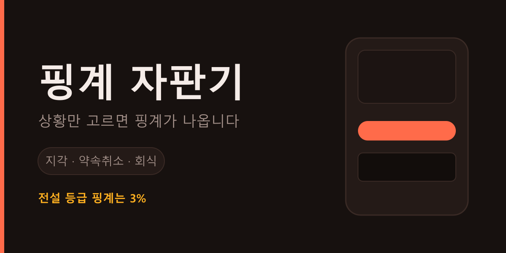

banner.png는 1332×360으로 렌더해 444×120으로 표시한다(3배 — 고해상도 화면 대비).
타이틀 글자는 폰트 이름이 아니라 아웃라인 패스로 박혀 있다. 폰트 설치 없이 어디서든 같게 나온다.
아래 각 칸은 실제 화면 순서(배너 → 탭바 → 자판기 본체)를 그대로 재현한 것이다. 레드는 빨간 덩어리가 위아래로 두 번 쌓인다. 배너가 자판기를 소개하는 게 아니라 경쟁한다.
본문(서브카피)은 Gothic A1 SemiBold 고정. 타이틀만 바꿔 비교한다.
